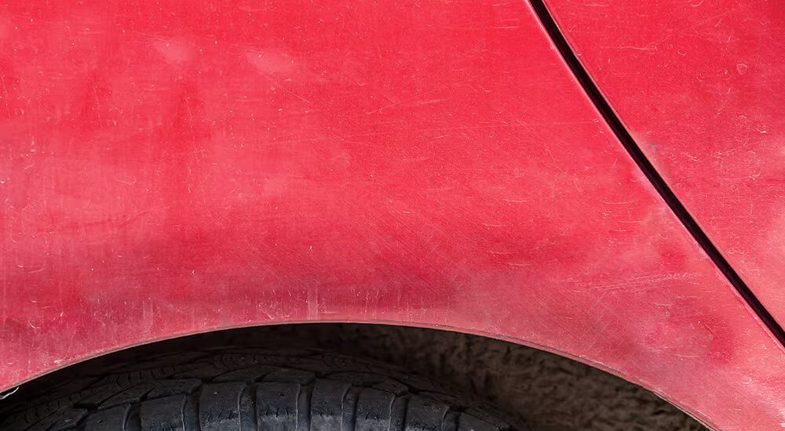
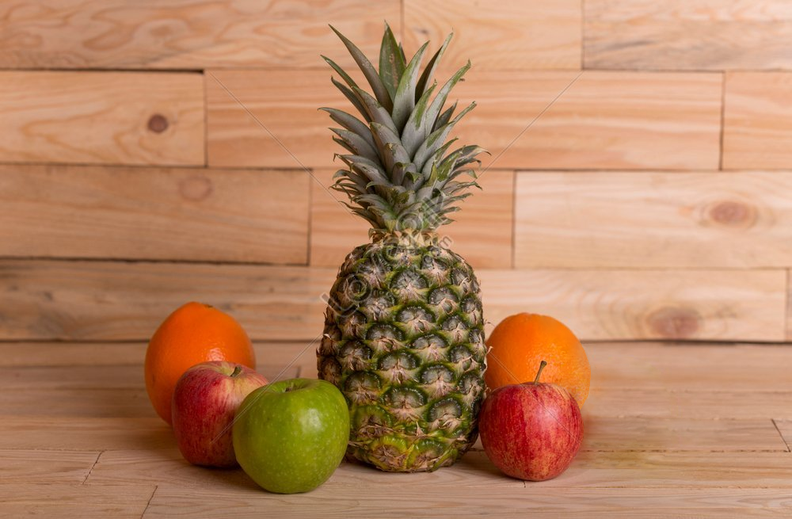
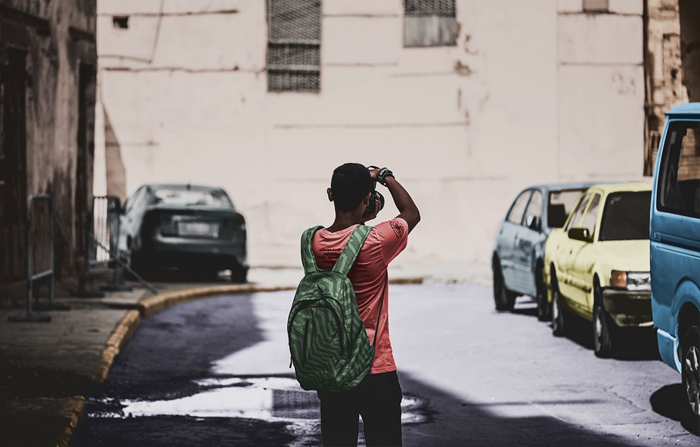

Adobe Photoshop
Adobe Photoshop on professionaalne pilditöötlusprogramm, mida kasutatakse fotode parandamiseks, graafika loomiseks ja kujundamiseks. Sellega saab muuta pilte, töötada kihtidega ning luua visuaalset sisu nii digitaalseks kui ka trükikasutuseks.
Patch & Select
Selle ülesande eesmärk oli tutvuda ja harjutada Patch Tool ja Select tööriistade kasutamist pilditöötluses. Töö käigus õppisin, kuidas eemaldada pildilt soovimatuid objekte, kriime ja defekte nii, et tulemus jääks loomulik ja visuaalselt usutav.
Originaal

Uus

Objekti kaotamine
Selle ülesande käigus tegelesin objekti eemaldamisega pildilt, kasutades erinevaid pilditöötluse tööriistu: Select, Layers, Eyedropper, Paint Bucket ja Patch Tool. Eesmärk oli eemaldada soovimatu objekt nii, et taust jääks ühtlane ja loomulik.
Originaal

Uus
Koloriseerimine
Selle ülesande käigus tegelesin mustvalge pildi koloriseerimisega, kasutades varasemalt õpitud tööriistu ning lisaks ka Adjustment Layereid. Eesmärk oli anda pildile realistlikud värvid, säilitades samal ajal loomuliku valguse, varjud ja kontrastid.
Originaal

Uus
Digitaaljoonistus
Selle ülesande käigus lõin digitaalse joonistuse, alustades sketchist ja liikudes edasi detailse, layeritepõhise renderduseni.